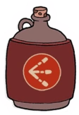

In-Game Description
"Short range with great damage -- if you can keep close to your target."
Regular Attack
The Spread
The Spread is a very short ranged weapon, but that doesn't mean it's not good. The Spread will shoot a very quick
series of red particles that will go in all directions of the direction the player is facing, almost acting as a shield (but it doesn't protect you, you just have to protect yourself).
The Spread also deals a good amount of damage as long as you are decently close to your target. You can think of the Spread as a small rapid fire explosion! Kind of like the Charge's EX.
Super Attack
The Eight Way
The Eight Way will immediately fire 8 larger versions of the normal spread in all directions of your character, making it incredibly useful if you are surrounded by multiple threats.
Statistics
| Weapon | Damage | DPS | Price | Fire Delay (Frames) |
|---|---|---|---|---|
| Spread | 1.24 | 41.33 (All shots hit) | 4 coins | 9 Frames |
| Eight Way | 36 (All shots hit) | 41.33 | 4 coins | 34 Frames |